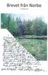

Brevet från NorboFölj Anna Larsdotter i gränstrakten mellan Gästrikland och Uppland under 1600-talet. Boken bygger på verkliga händelser ur arkiv som finns bevarade. Boken är utgiven i begränsad upplaga.
Beställ boken
Välkommen till Per Nirs!
Du har kommit till hemsidan för Per Nirs, en gård belägen i byn Dalkarlsbo i södra Gästrikland. I tretton generationer har gården bebotts av samma släkt. Här kan du läsa om Per Nirs historia sedan etableringen år 1607.